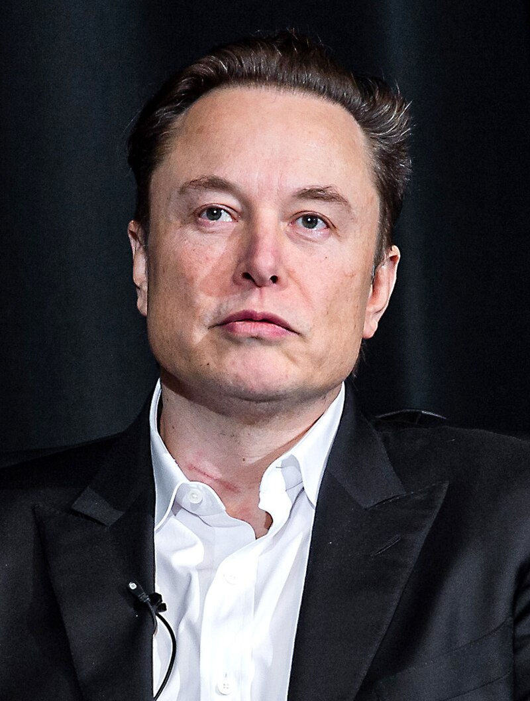

Elon Reeve Musk

Elon Reeve Musk (/ˈiːlɒn/; born June 28, 1971) is a businessman and investor known for his key roles in space company SpaceX and automotive company Tesla, Inc. Other involvements include ownership of X Corp., formerly Twitter, and his role in the founding of The Boring Company, xAI, Neuralink and OpenAI. He is one of the wealthiest people in the world; as of June 2024, Forbes estimates his net worth to be US$210 billion.
Early life and education
Childhood and family
- Elon Reeve Musk was born on June 28, 1971, in Pretoria, South Africa's administrative capital.
- Elon recalled trips to a wilderness school ("veldskool") which, he described as a "paramilitary Lord of the Flies" where "bullying was a virtue" and children were encouraged to fight over rations.
Education
- Musk attended Waterkloof House Preparatory School, Bryanston High School, and then Pretoria Boys High School, where he graduated.
- Musk arrived in Canada in June 1989, connected with a second cousin in Saskatchewan,[43] and worked odd jobs including at a farm and a lumber mill.[44] In 1990, he entered Queen's University in Kingston, Ontario.
Brief Info
| Titles |
Spouses |
| Founder |
Talulah Riley |
| CEO |
Justien Wilson |
Tesla
Tesla, Inc., originally Tesla Motors, was incorporated in July 2003 by Martin Eberhard and Marc Tarpenning.
Both men played active roles in the company's early development prior to Musk's involvement.